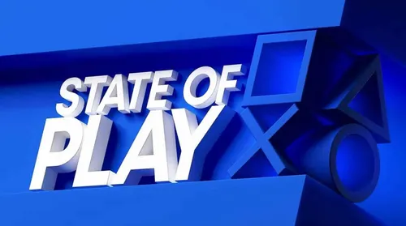

Últimas Notícias no mundo dos Games!!
Olhar estendido no GTA VI

GTA 6: "Um Olhar Estendido" na Netflix entrega quase 30 minutos de gameplay inédita
Assistir ao olhar estendido
A Rockstar Games estreou na quinta-feira (27) o especial Grand Theft Auto VI: Um Olhar Estendido na
Netflix, com 26 minutos de gameplay capturada diretamente no PS5 padrão. O vídeo abre com Jason e Lucia
cobrando uma dívida para Boobie Ike, que termina em tiroteio e fuga pela cidade — e já na primeira cena
confirma que o jogo adota o sistema de interação com NPCs de Red Dead Redemption 2, incluindo a
possibilidade de acariciar cães nas ruas. Ao longo do especial, aparece o personagem Raul como motorista de
fuga, um sistema de Perfil Criminal que registra tanto crimes quanto ações cotidianas (como
jogar lixo na lixeira), e um novo sistema policial em que as viaturas não aparecem no minimap — o jogador
precisa usar a mecânica de "Foco" para localizá-las. A troca entre Jason e Lucia é instantânea quando estão
juntos e leva alguns segundos quando separados, seguindo o modelo de GTA 5. O mundo aberto de
Leonida ganhou uma lista extensa de atividades: corridas de rua, motocross e em pista dedicada, jet ski,
mergulho, caiaque, barco a hélice nos pântanos, salto de paraquedas de arranha-céus, basquete, academia e
até fumar charuto. Comer e beber afeta o peso dos personagens, e treinar aumenta a força. O especial também
mostrou uma influenciadora transmitindo ao vivo do banco do passageiro enquanto Lucia dirige, com o chat da
live visível na interface. A Netflix teve exclusividade por seis horas antes da disponibilização gratuita no
YouTube. Grand Theft Auto VI chega em 19 de novembro para PS5 e Xbox Series X|S, rodando a 30 FPS.

Sony confirma dois State of Play consecutivos para 3 de setembro
A PlayStation anunciou que realizará duas transmissões consecutivas na quinta-feira (3): o State of
Play tradicional, em inglês com legendas em japonês, seguido imediatamente pelo State of Play
Japan, em japonês com legendas em inglês, apresentado por Yuki Kaji. O evento principal trará
atualizações e anúncios de estúdios da PlayStation Studios e parceiros de terceiros, e encerra com um
extended look de Final Fantasy VII Revelation da Square Enix — a terceira parte do
projeto de remake de FF7. Entre os títulos que podem aparecer, a imprensa especializada aponta
Intergalactic: The Heretic Prophet da Naughty Dog, God of War Laufey e Marvel's
Wolverine (lançamento previsto para 15 de setembro, exclusivo PS5). As transmissões começam às 10h
(horário de Brasília) e serão exibidas no YouTube e Twitch. O evento encerra o ciclo de grandes reveals
antes da temporada de festas de fim de ano.